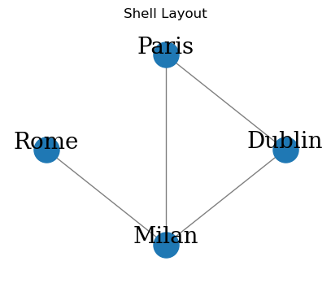
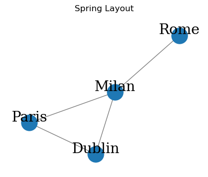
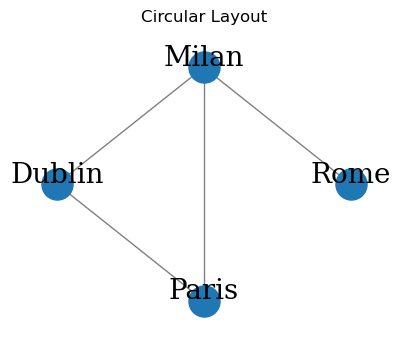
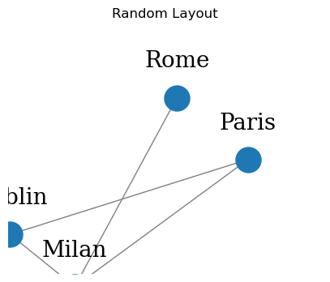
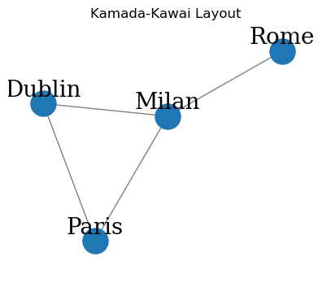
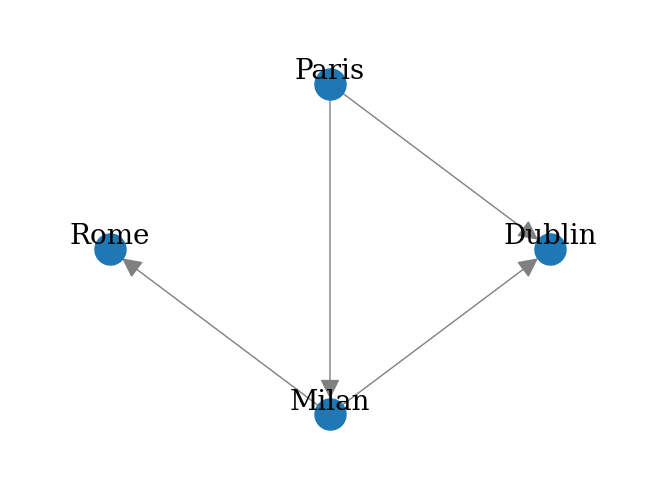
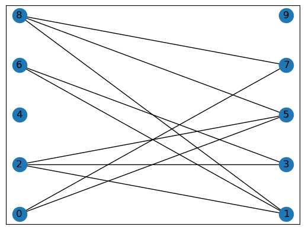

Chapter 1 : Introduction to Networkx#
Plot Graphs#
import networkx as nx
import matplotlib.pyplot as plt
def draw_graph(G, pos_nodes, node_names=None, node_size=50, plot_weight=False):
# Draw nodes and edges without labels
nx.draw(G, pos_nodes, with_labels=False, node_size=node_size, edge_color='gray', arrowsize=30)
# Adjust label positions slightly above the nodes
pos_labels = {node: (x, y + 0.08) for node, (x, y) in pos_nodes.items()}
# Use provided node names if given; otherwise use node IDs as labels
if node_names:
labels = {node: node_names.get(node, str(node)) for node in G.nodes()}
else:
labels = {node: str(node) for node in G.nodes()}
# Draw node labels
nx.draw_networkx_labels(G, pos_labels, labels=labels, font_family='serif', font_size=20)
# Optionally draw edge weights
if plot_weight:
edge_labels = {(a, b): d["weight"] for a, b, d in G.edges(data=True) if "weight" in d}
nx.draw_networkx_edge_labels(G, pos_nodes, edge_labels=edge_labels, font_size=12)
# Hide axes and expand view limits for better spacing
plt.axis('off')
axis = plt.gca()
axis.set_xlim([1.2 * x for x in axis.get_xlim()])
axis.set_ylim([1.2 * y for y in axis.get_ylim()])
Undirected Graph#
import numpy as np
import pandas as pd
import networkx as nx
import matplotlib.pyplot as plt
# Create the graph
G = nx.Graph()
V = {'Dublin', 'Paris', 'Milan', 'Rome'}
E = [('Milan', 'Dublin'), ('Milan', 'Paris'), ('Paris', 'Dublin'), ('Milan', 'Rome')]
G.add_nodes_from(V)
G.add_edges_from(E)
# Define layout methods
layouts = {
'Shell Layout': nx.shell_layout(G),
'Spring Layout': nx.spring_layout(G, seed=42),
'Circular Layout': nx.circular_layout(G),
'Random Layout': nx.random_layout(G),
'Kamada-Kawai Layout': nx.kamada_kawai_layout(G)
}
# Draw graph with each layout
for title, pos in layouts.items():
plt.figure(figsize=(5, 4))
plt.title(title)
draw_graph(G, pos_nodes=pos, node_size=500)
plt.show()





print(f"V = {G.nodes}")
print(f"E = {G.edges}")
V = ['Rome', 'Milan', 'Dublin', 'Paris']
E = [('Rome', 'Milan'), ('Milan', 'Dublin'), ('Milan', 'Paris'), ('Dublin', 'Paris')]
{G.degree(v): v for v in G.nodes}
{1: 'Rome', 3: 'Milan', 2: 'Paris'}
Graph order#
The order of a graph is the number of its vertices |V|. The size of a graph is the number of its edges |E|.
Node degree#
The degree of a vertex is the number of edges that are adjacent to it. The neighbors of a vertex v in a graph G is a subset of vertex V’ induced by all vertices adjacent to v.
print(f"Graph Order: {G.number_of_nodes()}")
print(f"Graph Size: {G.number_of_edges()}")
print(f"Degree for nodes: { {v: G.degree(v) for v in G.nodes} }")
print(f"Neighbors for nodes: { {v: list(G.neighbors(v)) for v in G.nodes} }")
Graph Order: 4
Graph Size: 4
Degree for nodes: {'Rome': 1, 'Milan': 3, 'Dublin': 2, 'Paris': 2}
Neighbors for nodes: {'Rome': ['Milan'], 'Milan': ['Dublin', 'Paris', 'Rome'], 'Dublin': ['Milan', 'Paris'], 'Paris': ['Milan', 'Dublin']}
Ego graph#
The neighborhood graph (also known as an ego graph) of a vertex v in a graph G is a subgraph of G, composed of the vertices adjacent to v and all edges connecting vertices adjacent to v.
ego_graph_milan = nx.ego_graph(G, "Milan")
print(f"Nodes: {ego_graph_milan.nodes}")
print(f"Edges: {ego_graph_milan.edges}")
Nodes: ['Rome', 'Milan', 'Dublin', 'Paris']
Edges: [('Rome', 'Milan'), ('Milan', 'Dublin'), ('Milan', 'Paris'), ('Dublin', 'Paris')]
Add nodes and eddges#
new_nodes = {'London', 'Madrid'}
new_edges = [('London','Rome'), ('Madrid','Paris')]
G.add_nodes_from(new_nodes)
G.add_edges_from(new_edges)
print(f"V = {G.nodes}")
print(f"E = {G.edges}")
V = ['Rome', 'Milan', 'Dublin', 'Paris', 'Madrid', 'London']
E = [('Rome', 'Milan'), ('Rome', 'London'), ('Milan', 'Dublin'), ('Milan', 'Paris'), ('Dublin', 'Paris'), ('Paris', 'Madrid')]
Remove nodes and eddges#
node_remove = {'London', 'Madrid'}
G.remove_nodes_from(node_remove)
print(f"V = {G.nodes}")
print(f"E = {G.edges}")
V = ['Rome', 'Milan', 'Dublin', 'Paris']
E = [('Rome', 'Milan'), ('Milan', 'Dublin'), ('Milan', 'Paris'), ('Dublin', 'Paris')]
node_edges = [('Milan','Dublin'), ('Milan','Paris')]
G.remove_edges_from(node_edges)
print(f"V = {G.nodes}")
print(f"E = {G.edges}")
V = ['Rome', 'Milan', 'Dublin', 'Paris']
E = [('Rome', 'Milan'), ('Dublin', 'Paris')]
print(nx.to_edgelist(G))
[('Rome', 'Milan', {}), ('Dublin', 'Paris', {})]
print(nx.to_pandas_adjacency(G))
Rome Milan Dublin Paris
Rome 0.0 1.0 0.0 0.0
Milan 1.0 0.0 0.0 0.0
Dublin 0.0 0.0 0.0 1.0
Paris 0.0 0.0 1.0 0.0
Directed Graph#
import networkx as nx
G = nx.DiGraph()
V = {'Dublin', 'Paris', 'Milan', 'Rome'}
E = [('Milan','Dublin'), ('Paris','Milan'), ('Paris','Dublin'), ('Milan','Rome')]
G.add_nodes_from(V)
G.add_edges_from(E)
print(nx.to_pandas_edgelist(G))
print(nx.to_pandas_adjacency(G))
source target
0 Milan Dublin
1 Milan Rome
2 Paris Milan
3 Paris Dublin
Rome Milan Dublin Paris
Rome 0.0 0.0 0.0 0.0
Milan 1.0 0.0 1.0 0.0
Dublin 0.0 0.0 0.0 0.0
Paris 0.0 1.0 1.0 0.0
print(f"Indegree for nodes: { {v: G.in_degree(v) for v in G.nodes} }")
print(f"Outegree for nodes: { {v: G.out_degree(v) for v in G.nodes} }")
Indegree for nodes: {'Rome': 1, 'Milan': 1, 'Dublin': 2, 'Paris': 0}
Outegree for nodes: {'Rome': 0, 'Milan': 2, 'Dublin': 0, 'Paris': 2}
draw_graph(G, pos_nodes=nx.shell_layout(G), node_size=500)

Weighted Directed Graph#
Multigraph#
We will now introduce the multigraph object, which is a generalization of the graph definition that allows multiple edges to have the same pair of start and end nodes.
import networkx as nx
G = nx.MultiDiGraph()
V = {'Paris', 'Dublin','Milan', 'Rome'}
E = [ ('Paris','Dublin', 11), ('Paris','Milan', 8),
('Milan','Rome', 5),('Milan','Dublin', 19)]
G.add_nodes_from(V)
G.add_weighted_edges_from(E)
draw_graph(G, pos_nodes=nx.shell_layout(G), node_size=500, plot_weight=True)
print(nx.to_pandas_edgelist(G))
print(nx.to_pandas_adjacency(G))
source target weight
0 Milan Rome 5
1 Milan Dublin 19
2 Paris Dublin 11
3 Paris Milan 8
Rome Milan Dublin Paris
Rome 0.0 0.0 0.0 0.0
Milan 5.0 0.0 19.0 0.0
Dublin 0.0 0.0 0.0 0.0
Paris 0.0 8.0 11.0 0.0
Bipartite Graph#
Edges are only allowed across different sets and are not allowed within nodes belonging to the same set.
n_nodes = 10
n_edges = 12
bottom_nodes = [ith for ith in range(n_nodes) if ith % 2 ==0]
top_nodes = [ith for ith in range(n_nodes) if ith % 2 ==1]
iter_edges = zip(
np.random.choice(bottom_nodes, n_edges),
np.random.choice(top_nodes, n_edges))
edges = pd.DataFrame([
{"source": a, "target": b} for a, b in iter_edges])
B = nx.Graph()
B.add_nodes_from(bottom_nodes, bipartite=0)
B.add_nodes_from(top_nodes, bipartite=1)
B.add_edges_from([tuple(x) for x in edges.values])
from networkx.drawing.layout import bipartite_layout
pos = bipartite_layout(B, bottom_nodes)
nx.draw_networkx(B, pos=pos)

Multi Graph#
import networkx as nx
directed_multi_graph = nx.MultiDiGraph()
V = {'Dublin', 'Paris', 'Milan', 'Rome'}
E = [('Milan','Dublin'), ('Milan','Dublin'), ('Paris','Milan'), ('Paris','Dublin'), ('Milan','Rome'), ('Milan','Rome')]
directed_multi_graph.add_nodes_from(V)
directed_multi_graph.add_edges_from(E)
draw_graph(G, pos_nodes=nx.shell_layout(G), node_size=500)